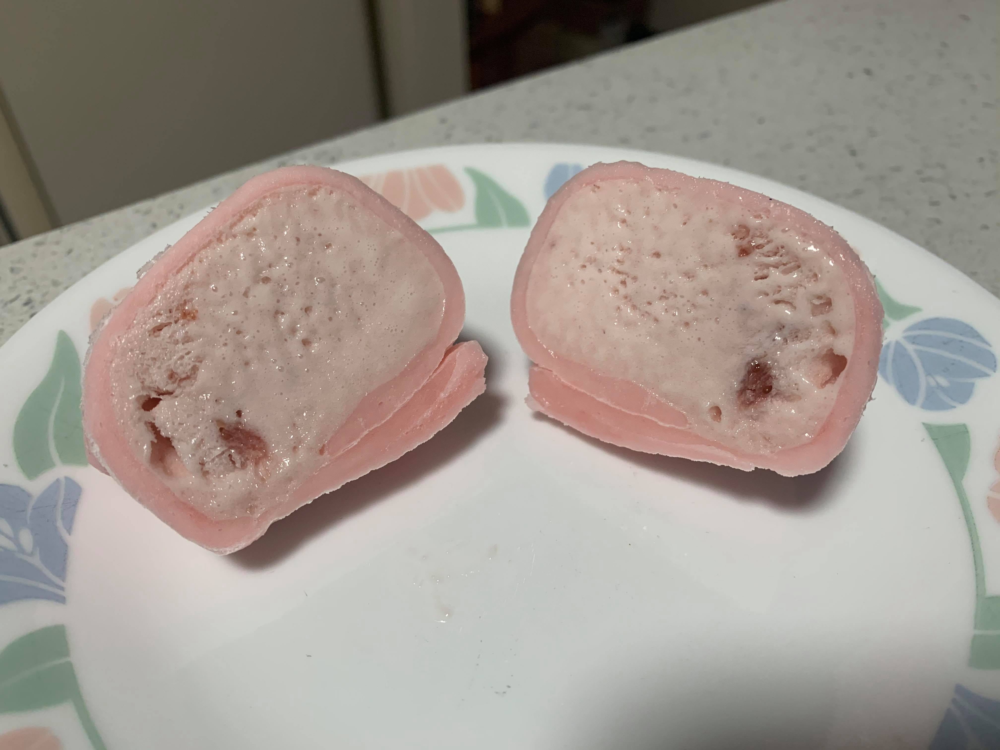

Mochi Ice Cream

Ingredients:
- Mochi, cut into flat circles
- Ice cream
Instructions:
- Scoop the ice cream into balls, each about 2 tbsp. Place onto a baking sheet and place into the freezer until very firm.
- Working quickly, take a scoop of ice cream, and place onto the center of a circle of mochi. Wrap the mochi around the ice cream and press the edges of the dough together, squeezing to seal.
- Wrap the mochi ice cream balls in plastic wrap, seam side down, and place into the freezer to set. Repeat with remaining circles of dough and ice cream balls. Allow mochi to freeze totally in the freezer.
- When ready to eat, remove from the freezer and let sit for a few minutes to let soften.